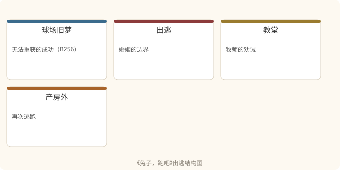

兔子，跑吧
一、基本信息
| 作者 | 约翰·厄普代克 |
|---|---|
| 成书/出版 | 1960年出版（Britannica：Rabbit, Run (1960)） John Updike — Encyclopaedia Britannica（百科全书） |
| 国别/地区 | 美国 |
| 时代 | 现当代 · 20世纪 |
| 体裁 | 长篇小说 |
| 语言 | 英语 |

《兔子，跑吧》出逃结构图（主题·结构图）
二、创作背景
Britannica：'concerns a former star athlete who is unable to recapture success when bound by marriage and small-town life'（写被婚姻与小城生活束缚的前球星无法重获成功——B256）。
兔子五书（B256）：Rabbit, Run (1960)/Rabbit Redux (1971)/Rabbit Is Rich (1981)/Rabbit at Rest (1990)/Rabbit Remembered (2001)；后两部获普利策奖。
三、内容脉络
'兔子'哈利·安斯特朗抛下怀孕妻子出逃——教练、妓女与牧师间辗转（通说）。
结局：产房外的逃离（通说待核）。
四十年后的《兔子记得》（2001）回望其死后世界（Britannica：Rabbit Remembered (2001)）。
四、主要人物表
| 人物 | 身份 | 说明 |
|---|---|---|
| 哈利（兔子） | 前球星 | 出逃者（B256） |
| 詹妮丝 | 妻子 | 怀孕（通说待核） |
| 鲁丝 | 妓女 | 同居者（通说待核） |
五、主题与艺术特点
- 逃逸的冲动与婚姻的束缚（B256）。
- 美国中产新教生活的身体史（通说）。
- 五十年代到世纪末的时间编年（B256：兔子五书）。
六、影响与评论
- Britannica：两获普利策奖（1982/1990）（B256）。
John Updike — Encyclopaedia Britannica（百科全书） - 'considered to be one of his best novels'（B256——本作）。
John Updike — Encyclopaedia Britannica（百科全书）
七、阅读建议
难点
- 现在时叙述（通说）。
- 美国50年代礼俗。
- 《兔子，跑吧》（上海译文出版社，通说待核）。
按五书顺序通读（可选只读首尾）。
八、待核实
- 中译本信息核对。
- 现时态叙事的评论待核。
- 兔子五书美国史对应（艾森豪威尔—布什）待核。
本页主要来源
约翰·厄普代克的其他收录作品：兔子，跑吧